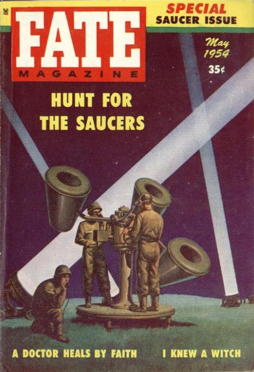

Couverture du n° de Fate de ce mois-ci sur la "chasse aux soucoupes" par les militaires

A Elsinore (Californie), le chef d'escadron du corps de Marine US D. R. Higgin,
aux commandes de son jet F3D-2, observe durant quelques secondes un objet métallique en forme de delta, de 22 pieds
de long and 10 de large, avec un aileron à son sommet, descendre avec un angle de 25 à 300 sous l'appareil dirigeant
une formation, et au-dessus de son l'appareil Cas Blue Book n° 2994 non résolu.
A l'aéroport National de Washington (D. C.), 3 policiers
de l'air de l'USAF observent à 3 reprises durant 45 s environ, 2 vives lumières voler droit, faire un virage à 90°,
et disparaître progressivement Cas Blue Book n° 2997 non résolu.
Donald E. Keyhoe annonce que 2 satellites artificiels gravitent autour de la Terre ; ils défient les lois
de la physique et leur orbite est très irrégulière. Il ne s'agit pas d'engins fabriqués par l'homme.
À la base aérienne de Cannon (Nouveau Mexique), 2 personnes sont témoins de l'atterrissage d'un appareil en forme
de lentille, de la taille d'une maison. Il atterrit près d'une voie de chemin de fer, soulevant un nuage de sable
dans le désert. L'un des témoins décide de s'approcher mais, pris de panique, s'enfuit Otto Binder.
Nigel Frapple rentre chez lui à bicyclette après un bal à Wincanton (Somerset, Angleterre). À 5 km de Burton, au croisement de Redlynch, il voit une
lumière "terrifiante" dans un champ, et saute de bicyclette pour observer, caché dans un buisson. A 2,50 m ou 3
m de lui environ, il voit un objet circulaire de 15 m de diamètre environ, en survol à 6 m du sol environ.
Malgré sa brillance, "de la couleur d'une flamme" orangée, l'objet semble métallique. Après 1 mn environ,
l'objet se déplace vers le nord-ouest de Bruton, accélérant et s'élevant à grande vitesse. L'objet ne fait
pratiquement aucun bruit à part un léger "bruissement", et est accompagné d'une lumière plus faible à quelque
distance Sunday Dispatch, 13 juin 1954 < Bowen, C., En quête d'humanoides, p. 15Vallée, Jacques: cas n° 3, "Rapport sur l'analyse de 200 observations documentées faites en 1954" Frapple écrira à Bowen qu'il avait aussi été attiré par un son pulsant et que, le lendemain, un examen du champ, opéré avec un journaliste de la radio, a révélé que l'herbe avait été écrasée sur une surface de 30 m de diamètre, roussie par endroits.
Doreen Heffer, de Shobley (près de Ringwood, dans le Hampshire),
voit un objet brillant la survoler. Elle fait une description très semblable à celle de Frapple Bowen, Charles: En quête d'humanoides, p. 16.
A La Porte (Indiana), l'ingénieur des autoroutes R. W.
Dring et l'ingénieur Geert Tibma observent durant 45 s l'ascension superficielle d'une vive lumière Cas Blue Book n° 3009 non résolu.
A Concord (New Hampshire), MmeL. K. Stevens observe un objet oblong et très blanc voler extrêmement vite, puis clignoter
au bout de 8 à 10 s Cas Blue Book n° 3020 non résolu.